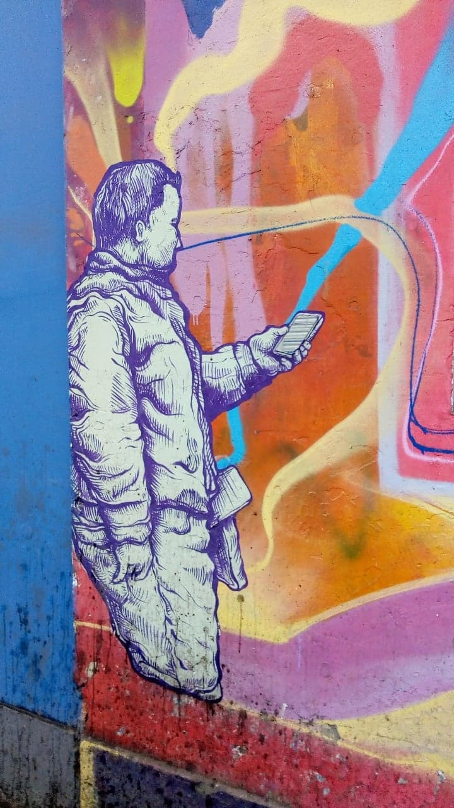

Hola
¿Por qué?
A veces las cosas no tienen un mayor sentido más que salvarte, esto es punk. "Agarra lo que tengas, toca lo que puedas y di lo que quieras, porque de lo que se trata es de salvarte. En esas épocas las opciones que tenías eran, te volvías terrorista, te afincabas en el sistema o te suicidabas...o hacías arte." Wicho García, Narcosis.
Todas las veces que se me pasaba el efecto y estas voces me dejaban de hablar, me tenía miedo porque me sentía sola y pensaba que todo lo que me había dicho durante horas y horas, mientras estaba high, era realidad objetiva. Hubo veces en las que no podía ni asomarme a la ventana porque pensaba; esa misma voz que parece haberme abandonado, se transformará en fuerza dentro de mí y me obligará a caer. Lloraba. Tiempo después y después de varias caídas me levanté con la única convicción del autoconocimiento. No es bueno quedarse encerrado sin saber quién eres, caerse en el hoyo no es ninguna salida. Ahora que puedo estar más consciente, igual lo hice; me asomé y observé todo tan lindo: Me hallé en la naturaleza, en la gente, en la simetría de la arquitectura de Miraflores, en lo que yo sé que soy.

Detente
¿Qué?
En mi opinión el pensamiento humano tiene varias escalas de
intensidad; son como cables interconectados, además tiene
varios niveles; son como cables paralelos.
Esto quiere decir que un tema enfocado desde un solo punto de
vista puede rapidamente, dependiendo de la
habilidad y autoconocimiento, convertirse en algo tan profundo
cuando es analizado por completo que creemos que, ya, eso es.
Así debe ser, amén. Y así se generan las ideologías en verdad.
Sin embargo, quienes se atascan en alguna de ellas también están desorientados, pierden el
sentido común, la característica innata de exploración porque lo que están buscando es aferrarse a algo que llene sus vacíos o al menos los cubra. Es lo que muchos delatan cuando dicen "todo es relativo",pero la mayoría lo generaliza. Que podamos tener la capacidad de definir de
manera relativa al sistema no quiere decir que el sistema en su
misma forma lo sea. Quiero dejar esto por sentado.

Recuerda
¿Quién?
A veces me cuesta pararme y ejecutar planes porque mi cabeza no me deja pensar en una sola cosa, puedo quedarme horas, con esa voz que me habla y analiza todo a mi alrededor; el pensamiento humano que aprende y desaprende, la parte racional que se alimenta de razones y muchas otras veces de significados. A veces es un poco más sensible que otras y cuando lo es, puedo reconocer y entender a la gente por sus traumas y crianzas, por sus vacíos. Me fijo en el ser individual.
Cuando la voz es crítica, cuando me veo a mi misma primero para ver a los demás, puedo distinguir las ideologías, el funcionamiento del sistema,
de la publicidad, del mensaje a proyectar de unos cuantos hacia todos los muchos que nos hemos olvidado de vivir y solo trabajamos para que
esta creación humana que se basa en la acumulación de cosas a través del dinero pueda seguir funcionando
para los que lo manejan. Obviamente, en teoría y gracias a la iteración innegable de las ideologías, cualquiera puede convertirse en uno pero ¿a costa de qué?, es inaudito no darse cuenta que le pertenece a una élite.
Y en consecuencia, la gente, la población que al
final hace la masa, se adormece. Se duerme el que trabaja 12 horas al día en algo que no le gusta
porque a fin de mes debe mantener el hijo que tuvo por descuidado.
Suerte Campeón
MÚSICA
Estoy sentado en mi cama,
pensando en las cosas que pude hacer,
pensando en que mañana no estaré.
¿Y quién sabe si hay otra vida?
tal vez nunca lo sabré,
solo me queda salir y no volver...
Si fuera niño otra vez,
me arrepentiría de ser como soy ahora.
Si fuera niño otra vez,
me arrepentiría de ser como soy ahora.
Si fuera niño otra vez,
me arrepentiría de ser como soy ahora (BIS).
Tienes
MÚSICA
Tienes algo, pero no sabes qué es,
pobre voluntad para no intentarlo,
puedo ver una luz al final de este día,
corro tras esa luz pensando hallar mi salvación.
Eran los amigos fumando hasta enloquecer,
todo es muy poco, lo saben bien.
haré que ocurra algo para volver a intentar,
construyendo cada pequeño desastre.
Pero ¿qué sucedió?
¿por qué están los amigos tan tristes?
ahora que el fuego se extinguió buscarán prenderse por dentro
a pesar de lograrlo arden muy solos en compañía
defectuosa combustión para despedirnos
cada uno tomando un camino distinto
hasta apagarnos muy lentamente por el camino.

Concéntrate
SUEÑA
Se duerme quien cree en las noticias de televisión, o se fanatiza con alguna postura: se duerme el socialista, el capitalista, el que lleva su vida haciendo deporte y comiendo sano, creyendo que es mejor que el resto. Los que nos damos cuenta de esta mentira, tomamos una posición de protesta y rebeldía, tratando de hacer las cosas que a nuestro juicio tengan sentido. En vista de que necesitamos la colectividad para lograr cualquier objetivo, desde abrir una puerta hasta cumplir un sueño, nótese cuán difícil es convivir con el mundo y mantenerse independiente. En la medida de lo posible tratar de arrancar prejuicios, cuestionar consejos o evadir esa información que se exparse con la intención de que uno actue de determinada manera.
Pero incluso en la posición de protesta y rebeldía, las personas se siguen adormeciendo; se quedan en el surrealismo, en el hedonismo, en romperlo todo porque está mal, y se hacen daño incluso a si mismos, a través de las drogas. Es verdad que el ser humano de manera innata tiende a la autodestrucción, pero justamente porque también somos seres racionales es que esa característica no puede ser un factor definitivo para nuestra existencia.
Tú no estás sola
MÚSICA
Si tienes miedo, es por que estas conciente
y solo estas pensando, en buscar una solución
no te apures si es que aún no la consigues, oh no...
después de todo seguiré a tu lado
en las buenas y malas, como siempre he estado
la vida es dura, pero nada es imposible
amor...
tu no estas sola!!!
cuentas conmigo para
cualquier cosa!!!!
no lo olvides...no.
Aún recuerdo esos dias cuando estaba en el piso
y tu me levantaste solo querias hablar conmigo
eso dijiste, oh dios...
gracias al cielo por enviarme un angel
tan maravilloso para salvarme
si alguna vez estuve solo, triste y perdido
ya no...
tu no estas sola!!!
cuentas conmigo para
cualquier cosa!!!!
no lo olvides
...yo no lo olvido.
A la mierda
MÚSICA
Camino a casa mis pensamientos estan perdidos,
estamos hartos de tanta miseria...es una mierda el rockandroll,
¿Quién tiene dinero?, ¿Quién?
¿Quién tiene poder?, ¿Quién?
No es una causa perdida, joder al que te impuso la ley.
Para conquistar el infierno, que mi guitarra escupa fuego,
al descubrir la guerra encubierta, tu sucio juego control mental,
¿Quién tiene dinero?, ¿Quién?
¿Quién tiene poder?, ¿Quién?
No es una causa perdida, joder al que te impuso la ley.
A la mierda, a la mierda, a la mierda, a la mierda,
a la mierda el rockandroll.
Tu contra todas las demencias te vengan de donde te vengan,
contra el ojo que vigila calienta el odio,
a la mierda!!!

Existe
La droga te destruye porque te retrae, te aísla, tampoco es que quiera discutir sobre qué es o no es la droga, pero reconozco que he tenido un cambio brusco dentro de mi cabeza desde que las empecé a usar seguido, felizmente pude asociarlo con autoconocimiento y sí creo que puede ser un peligro para unx mismx adoptar su consumo diario sin conocerse bien, nunca es una escapatoria, jamás. Al final, obviamente, esto puede estar encadenado a dos cosas aparentemente contradictorias: que el adormecimiento sea provocado por el consumo: la droga como constructor, o que lo acentúe más debido a otras causas: La droga como conductor. O existe y está escondido, o no existe y lo tiendo a crear por defectos propios: la ansiedad, la inseguridad y mi poca capacidad interpersonal.

Sueña
DIY
Siento al mundo paralelo de la protesta, del ser independiente como si fuera parte de mi, aún lo recuerdo.
Lo único malo es que estoy abusando de las drogas y no
estoy haciendo nada.
NADA desde el punto de vista profesional.
NADA desde el punto de vista hobbiano, salvo este fanzine.
Y pienso demasiado, analizo mucho a las personas a mi alrededor y a las distintas ideologías que se forman como burbujas. Si voy a querer hacer algo, voy a necesitar estar lúcida. Me repito mil veces.
Por esto siempre pienso en niveles e intensidades del pensamiento humano, porque hay personas que aún en sus debilidades, nunca se perdieron, siempre se mantuvieron firmes defendiendo lo que aman hacer y ser: libres.
Creo que es necesario perseguir nuestros sueños porque
una vez que los obtenemos, encontramos nuestro espacio y lugar. Aún no entiendo a las personas que eligen una
ideología y no la cuestionan más: ni los punks, ni los hippies, ni los científicos, ni los matemáticos.
Es como si ya se hubieran encontrado (o resignados) a sí mismos.
Pero bueno, quienes lo han elegido, eligieron no
seguir al resto, pero también les hace falta elegir ser mejor que el resto. Si no, estarán de igual manera condenados, y nosotrxs no queremos ser así, nos repetimos mil veces más: no vamos a perdernos.